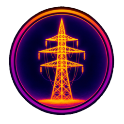
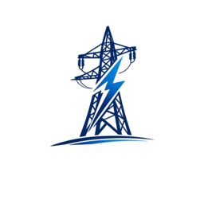

قسم الخطوط - فرع شبكة واسط
قسم الخطوط - فرع شبكة واسط
هل تريد حذف هذا السجل نهائياً؟
سجّل بيانات الكشف، تصفح السجلات، وصدّر التقارير

الكشف الحراريقياسات الحرارة
الخطوطبيانات وحالة الخطوطفلان كشف هذا البرج بتاريخ كذا — الكشف ناقص
اضغط على أي عازل لتحديده كمتضرر (أحمر) أو سليم (أبيض)
اختر البرج أولاً لتحديد الفقرة
ℹ️ يُعرض افتراضياً آخر 6 أشهر فقط لتحسين سرعة التحميل. لبيانات أقدم، حدد تاريخ "من" واضغط "بحث موسّع".
| # | اسم الخط | التاريخ | رقم البرج | نوع البرج | الموظف | عوازل R | عوازل S | عوازل T | تقاطعات الحديد | قواعد البرج | ملحقات البرج | R نحو السابق | R نحو التالي | S نحو السابق | S نحو التالي | T نحو السابق | T نحو التالي | الأرضي 1 | الأرضي 2 | حرائق | طريق | ملاحظات | إجراءات |
|---|---|---|---|---|---|---|---|---|---|---|---|---|---|---|---|---|---|---|---|---|---|---|---|
| ⏳ جاري التحميل... | |||||||||||||||||||||||
هذي الكشوفات والمعالجات محفوظة على جهازك فقط، وستُرفع تلقائياً عند توفر الإنترنت (يتحقق التطبيق دورياً). تقدر تضغط الزر لرفعها فوراً، أو تعدلها أو تحذفها قبل الرفع.
| اسم المادة | الحجم | تعمل | عاطلة | الإجمالي | مكان الخزن | ملاحظات | إجراء |
|---|---|---|---|---|---|---|---|
| ⏳ جاري التحميل... | |||||||
| اسم المادة | الجهد | النوع/الحجم | الكمية | الوحدة | مكان الخزن | ملاحظات | إجراء |
|---|---|---|---|---|---|---|---|
| ⏳ جاري التحميل... | |||||||
| اسم المادة | العدد المستعار | التاريخ | المستعير | الحالة | إجراء |
|---|---|---|---|---|---|
| ⏳ جاري التحميل... | |||||
إجمالي السجلات المحفوظة
عدد الأعضاء المسجلين
تهيئة مرة واحدة لحالة الأبراج القديمة في مخزن الحالة (لا يمسّ الكشوف ولا المعالجات). آمن للتكرار والاستئناف.
| الاسم | اسم المستخدم | الصلاحية | القسم | الحالة | صلاحية المخزن | إجراءات |
|---|---|---|---|---|---|---|
| ⏳ جاري التحميل... | ||||||
يجمع بيانات كل الجداول بملف واحد (JSON) وينزّله لجهازك. احفظه بمكان آمن خارج الموقع (گوگل درايف مثلاً). يُفضّل تكرارها شهرياً.
يرفع بيانات من ملف نسخة احتياطية سابقة ويدمجها مع البيانات الحالية (تحديث/إضافة فقط — لا يمسح أي شيء موجود حالياً بقاعدة البيانات).
تقدر تختار أكثر من خط بنفس التقرير.
لو اخترت تصنيفاً معيناً، يظهر بس الأبراج اللي فيها فعلاً ضرر بهذا التصنيف. "الكل" = بدون أي تصفية (كل الأبراج).
يجمع هذا التقرير التقارير اليومية المحفوظة أصلاً بالأرشيف بين التاريخين — أي يوم بدون تقرير يومي محفوظ لا يظهر بالملخّص.
اختر وحد أو أكثر — يطلع بس الخطوط اللي فيها النشاط المحدد، وتظهر بس تفاصيل النشاط المختار.